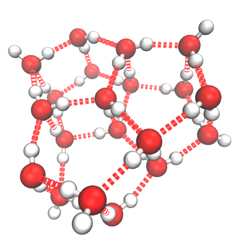

This benchmark requires that the global optimization algorithm is run starting from the 100 randomly generated (minimized) Lennard-Jones structures. Runs that are greater than 0.001 energy units from the known global minimum are considered failures. If a run was successful, the number of force calls needed to reach the global minimum is recorded.
The starting structures can be downloaded here.
Entries for this benchmark must record the average number number of force calls as force_calls in benchmark.dat, the maximum number of force calls as force_calls_max, and the minimum number of force calls as force_calls_min.
| Entry | Code | <N> | min N | max N |
|---|---|---|---|---|
|
gmin-csm
Date: 06 Aug 2014 Contributor: Jacob Stevenson and David Wales Code: wales-27058.tar.bz2 Input files: gmin-csm.tgz |
GMIN | 6.421e+03 | 7.700e+01 | 2.698e+04 |
|
gmin-symmetrise
Date: 06 Aug 2014 Contributor: Jacob Stevenson and David Wales Code: wales-27058.tar.bz2 Input files: gmin-symmetrise.tgz |
GMIN | 2.271e+04 | 7.200e+02 | 1.212e+05 |
|
gmin-nosym
Date: 06 Aug 2014 Contributor: Jacob Stevenson and David Wales Code: wales-27058.tar.bz2 Input files: gmin-nosym.tgz |
GMIN | 2.660e+05 | 6.457e+03 | 1.170e+06 |
|
eon-basinhopping1
Date: 20 Aug 2013 Contributor: Sam Chill Input files: eon-basinhopping.tgz |
Eon | 5.080e+05 | 4.579e+03 | 1.796e+06 |
|
pele-basinhopping
Date: 29 Aug 2013 Contributor: Jacob Stevenson Code: pele-a68ec5.tgz Input files: pele-basinhopping.tgz |
pele | 5.216e+05 | 9.447e+03 | 2.534e+06 |
This benchmark is a global optimization benchmark for a Lennard-Jones cluster with 75 atoms. The same criterion apply as in the LJ38 benchmark above.
The starting structures can be downloaded here.
| Entry | Code | <N> | min N | max N |
|---|---|---|---|---|
|
gmin1
Date: 09 Jan 2014 Contributor: David Wales Input files: gmin.tgz |
GMIN | 6.069e+04 | 1.100e+03 | 3.101e+05 |
This benchmark is a global optimization benchmark for a Lennard-Jones cluster with 98 atoms. The criteria are similar to LJ38 and 75, but entries are benchmarked on the number of quenches [Q] and the number of energy steps [V].
The starting structures can be downloaded here.
| Entry | Code | mean Q | stddev of Q | mean V | stddev of V |
|---|---|---|---|---|---|
|
gmin-symmetrise1
Date: 03 Oct 2022 Contributor: David Wales Input files: gmin-symmetrise.tgz |
GMIN | 1.282e+03 | 1.064e+03 | 2.495e+05 | 2.058e+05 |
|
gmin-nosym1
Date: 03 Oct 2022 Contributor: David Wales Input files: gmin-nosym.tgz |
GMIN | 4.382e+04 | 4.566e+04 | 5.989e+07 | 6.216e+07 |
This benchmark is a global optimization benchmark for a Lennard-Jones cluster with 150 atoms. It is analogous to LJ98.
The starting structures can be downloaded here.
| Entry | Code | mean Q | stddev of Q | mean V | stddev of V |
|---|---|---|---|---|---|
|
gmin-symmetrise1
Date: 03 Oct 2022 Contributor: David Wales Input files: gmin-symmetrise.tgz |
GMIN | 6.674e+02 | 5.435e+02 | 1.276e+05 | 1.064e+05 |
|
gmin-nosym1
Date: 03 Oct 2022 Contributor: David Wales Input files: gmin-nosym.tgz |
GMIN | 3.281e+03 | 2.723e+03 | 6.960e+05 | 5.845e+05 |
This benchmark test the performance of global optimization algorithms on a binary Lennard-Jones A42B58 system with a size ratio of 1.3. The form of the potential is
$$ E = 4 \sum_{i < j} \left[ \left( \frac{\sigma_{\alpha \beta}}{r_{ij}} \right)^{12} - \left( \frac{\sigma_{\alpha \beta}}{r_{ij}} \right)^{6} \right] $$where $\alpha$ and $\beta$ are the atom type of atoms $i$ and $j$, respectively. Here $\epsilon_{AA}$=$\epsilon_{AB}$=$\epsilon_{BB}$=1, $\sigma_{AA}$=1, $\sigma_{BB}$=1.3, and $\sigma_{AB}$=($\sigma_{AA}$+$\sigma_{BB}$)/2. Previous studies have reported a putative global minimum energy of -604.796307.
This benchmark requires that the global optimization algorithm is run starting from the 100 randomly generated (minimized) Lennard-Jones structures. The starting structures can be downloaded here. The global optimization algorithm will be run for not more than two million energy (force) evaluations for each starting structure.
Entries for this benchmark must record the average lowest energy found at the end of each run as average_energy in benchmark.dat as well as the largest and smallest energies (min_energy and max_energy) found at the end of the 100 runs.
| Entry | Code | <E> | min E | max E |
|---|---|---|---|---|
|
gmin
Date: 07 Aug 2014 Contributor: David Wales and Jacob Stevenson Code: wales-27058.tar.bz2 Input files: gmin.tgz |
GMIN | -5.895e+02 | -5.990e+02 | -5.786e+02 |
|
eon-basinhopping1
Date: 21 May 2014 Contributor: Sam Chill Input files: eon-basinhopping.tgz |
Eon | -5.846e+02 | -5.961e+02 | -5.741e+02 |

20" title="global minimum of TIP4P20" style="width:500px;height:500px" align="middle">This benchmark requires that the global optimization algorithm is run starting from the supplied randomly generated (minimized) structures. Runs that are greater than 0.001 energy units from the known global minimum are considered failures. If a run was successful, the number of force calls needed to reach the global minimum is recorded.
The 10000, 500, and 100 starting structures for n = 10, 15, and 20 can be downloaded here, here, and here.
Entries for this benchmark must record the average number number of force calls as force_calls in benchmark.dat, the maximum number of force calls as force_calls_max, and the minimum number of force calls as force_calls_min.
| Entry | Code | <N> | min N | max N |
|---|---|---|---|---|
|
gmin-tbp1
Date: 05 May 2014 Contributor: James Farrell Input files: gmin-tbp.tgz |
GMIN | 1.610e+04 | 1.210e+02 | 1.451e+05 |
|
gmin1
Date: 05 May 2014 Contributor: James Farrell Input files: gmin.tgz |
GMIN | 1.624e+04 | 1.210e+02 | 1.484e+05 |
| Entry | Code | <N> | min N | max N |
|---|---|---|---|---|
|
gmin-tbp1
Date: 05 May 2014 Contributor: James Farrell Input files: gmin-tbp.tgz |
GMIN | 6.254e+05 | 2.345e+03 | 6.177e+06 |
|
gmin1
Date: 05 May 2014 Contributor: James Farrell Input files: gmin.tgz |
GMIN | 6.706e+05 | 4.549e+03 | 5.026e+06 |
| Entry | Code | <N> | min N | max N |
|---|---|---|---|---|
|
gmin-tbp1
Date: 09 May 2014 Contributor: James Farrell Input files: gmin-tbp.tgz |
GMIN | 2.557e+07 | 5.973e+05 | 1.434e+08 |
|
gmin1
Date: 09 May 2014 Contributor: James Farrell Input files: gmin.tgz |
GMIN | 2.860e+07 | 4.412e+05 | 1.419e+08 |